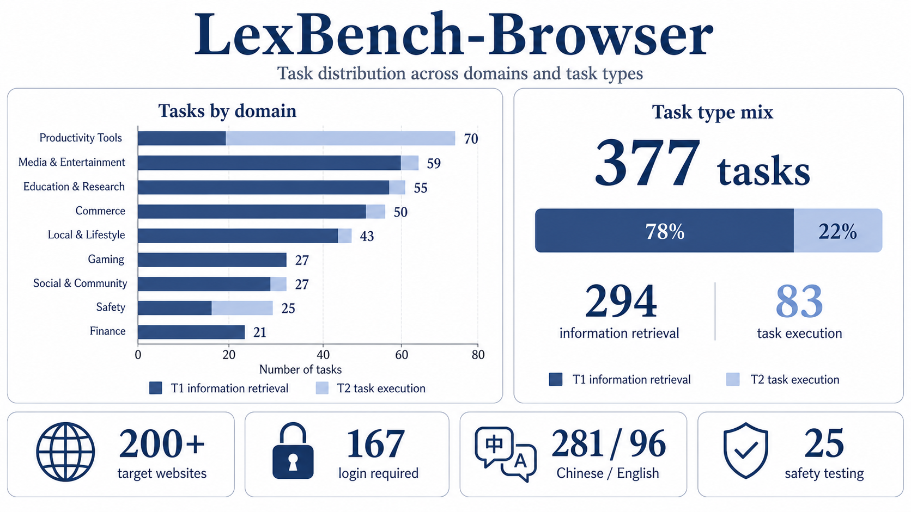
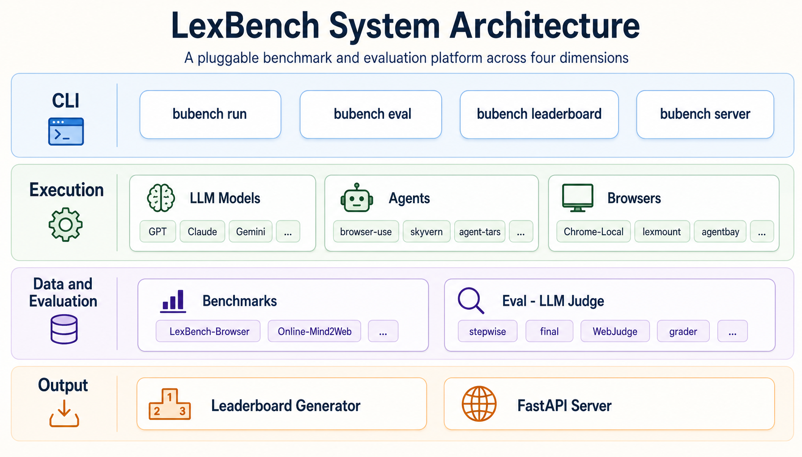
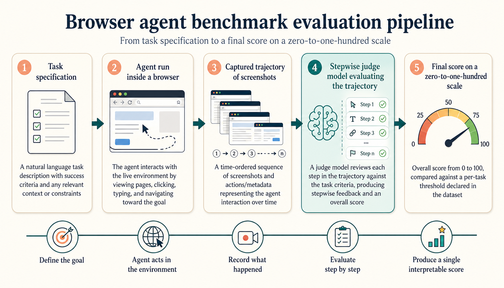

A real-world browser-agent benchmark with long-tail, multilingual web tasks and a deterministic stepwise judge.
LexBench is not just another dataset — it is a benchmark series and evaluation infrastructure for real-world Agents. The platform is built around four orthogonal, pluggable axes, so that any layer can be swapped or replaced without touching the rest. Results stay reproducible, comparable and ablation-friendly.
BaseAgent contract. browser-use, skyvern, Agent-TARS,
deepbrowse, openai-cua, claude-code — same protocol, fair comparison.
The first dataset, LexBench-Browser, focuses on browser-agent tasks that resemble actual user workflows: search, e-commerce, video, social, academic and tool-use across both English and Chinese websites, with varying difficulty tiers.

The system is organized as four layers — CLI, Execution, Data & Evaluation, and Output — with five pluggable modules concentrated in the middle two layers. Agents, models, browsers, benchmarks and judge strategies are all selected through configuration; the core flow is fixed.

Each trajectory is judged stepwise by a calibrated LLM judge. Final tasks pass when the step-aligned score crosses a per-task threshold declared in the dataset. All judge prompts, step screenshots and per-task scores are saved alongside the run for full reproducibility.

Four open agent integrations ship in the runner today, each registered with a single
decorator on a BaseAgent subclass. Adding a new one is roughly ten lines.
BaseAgent, register with
@register_agent("name"), and the runner will spawn it inside its own
uv environment via --extra <agent>.
Live results across all reference agents and models. Click any header to sort. Showing the top 15 entries by success rate.
| # | Agent | Model | Browser | Success % | Avg steps | Avg e2e (s) |
|---|---|---|---|---|---|---|
| 1 | browser-use | claude-opus-4-7 |
Lexmount | 58.0 | 14.2 | 205.8 |
| 2 | browser-use | kimi-k2.5 |
Lexmount | 58.0 | 24.7 | 280.1 |
| 3 | browser-use | gemini-3.1-pro-preview |
Lexmount | 56.0 | 13.9 | 149.0 |
| 4 | browser-use | gpt-5.5 |
Lexmount | 54.0 | 14.1 | 273.0 |
| 5 | browser-use | gemini-3.1-pro-preview |
Chrome-Local | 54.0 | 14.0 | 163.3 |
| 6 | browser-use | kimi-k2.6 |
Lexmount | 52.0 | 30.3 | 447.6 |
| 7 | browser-use | bu-2-0 |
Chrome-Local | 48.0 | 20.8 | 136.5 |
| 8 | browser-use | MiniMax-M2.7 |
Chrome-Local | 42.0 | 27.5 | 413.1 |
| 9 | Agent-TARS | gemini-3.1-pro-preview |
Lexmount | 40.0 | 18.4 | 121.1 |
| 10 | browser-use | bu-2-0 |
Lexmount | 40.0 | 23.4 | 350.7 |
| 11 | browser-use | gemini-2.5-pro |
Lexmount | 40.0 | 18.7 | 279.2 |
| 12 | browser-use | qwen3.5-plus |
Lexmount | 40.0 | 23.7 | 326.7 |
| 13 | browser-use | MiniMax-M2.5 |
Lexmount | 38.0 | 27.4 | 354.3 |
| 14 | browser-use | MiniMax-M2.7 |
Lexmount | 36.0 | 22.4 | 408.9 |
| 15 | browser-use | doubao-seed-2-0-pro |
Lexmount | 36.0 | 17.3 | 385.3 |
Live source: leaderboard server at the team intranet. Data is automatically pulled from
experiments/{benchmark}/{split}/{agent}/{model_id}/{ts}/ run dirs.
If you use LexBench-Browser in your work, please cite:
@misc{lexbench_browser_2026,
title = {LexBench-Browser: A Real-World Browser Agent Benchmark with Long-Tail and Multilingual Tasks},
author = {Lexmount Research and Collaborators},
year = {2026},
howpublished = {\url{https://lexmount.github.io/browseruse-agent-bench/}},
note = {Open benchmark; v1.0 reference release}
}Acknowledgements: integration scaffolding adapted patterns from browser-use, skyvern, Agent-TARS and deepbrowse upstream codebases.